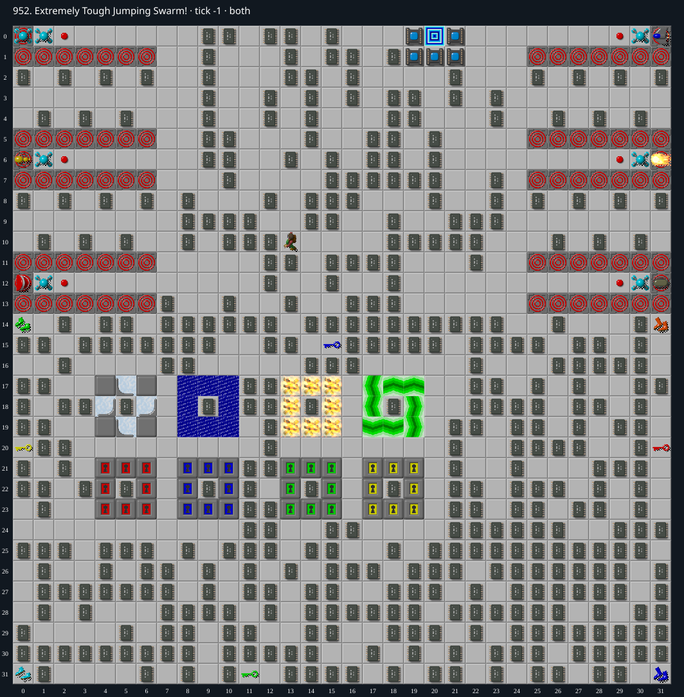

Jacques · Original Tile World MS
952. Extremely Tough Jumping Swarm!
Under investigationA native-verified partial route collects 329 of the 376 required chips, with ice, fire and force boots. Forty-seven required chips remain; the crowded upper area still prevents a complete route, and no impossibility proof is established.
376 chips required · 999 second time limit
This is an incomplete investigation. An unsuccessful attempt or bounded search is not evidence that a level is impossible.
Findings so far
- The strongest preserved route is alive at (0,14), tick 2319, with 329 chips collected and 47 still required. Its initial state, all 2,320 steps and terminal result match original Tile World MS exactly. Only original cardinal keyboard inputs are used.
- The level contains 419 chip tiles but requires 376, so a solution may leave 43 chips uncollected. The current route leaves 90 chip tiles, of which at least 47 still need collecting.
- The route collects an upper-area prefix, escapes through (9,15), then clears most of the lower chip field. It acquires ice boots at (0,31), later obtains the red key and fire boots on the right edge, and uses the central fire enclosure as a refuge.
- After collecting the blue- and red-door room chips, it takes the yellow key at (0,20) and force boots at (0,14). The remaining water and green-key areas are still candidates for a different ordering; longer tool-collection detours let the automatic cloners fill more of the board.
- The red-ring strips in the upper area are clone-machine terrain, not teleporters. Those impassable strips restrict entry into the upper side compartments. Returning to the upper chips after clearing the lower board is the unresolved part of this route.
Inspect both layers
The main map shows the initial runtime state. Switch to the buried layer to inspect hidden terrain and items. Hover coordinates are also available in the downloadable SVG.


Recorded checks and attempts
- data audit: Decoded both 1024-cell DAT planes and exact level metadata; initialized production MS runtime and rendered actual game sprites.
- bounded collection attempt: A short run collected 37 of the required 376 chips, then was cornered by the automatically cloned swarm near (0,10). This is an unsuccessful attempt, not an impossibility argument.
- native full-trace partial validation: A bottom-first partial route collects 206 of the 376 required chips and is alive at (7,22) at tick 1395, but is then cornered. Its full initial state, 1,396 steps, and result match the original native engine; exact replay bytes were read and native stderr was empty. This is not a winning replay.
- 329-chip native full-trace partial validation: Collected 329/376, alive at (0,14), tick 2319. Initial state, all 2,320 steps and terminal result match original Tile World MS. Exact TWS bytes read, empty native stderr, 560 cardinal keyboard commands and zero mouse commands. The separate route fixture includes every tick input and is explicitly marked incomplete.
Scope and limitations
- This is a partial route, not a winning replay. Reaching a live endpoint does not prove that a continuation exists.
- Bounded navigation and collection attempts do not cover all legal routes, all initial random states or all input timings. No universal impossibility claim is made.
- Native verification refers to original Tile World MS, not independent CHIP.EXE or SuCC verification.